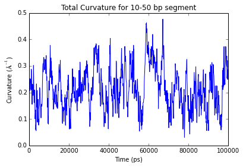
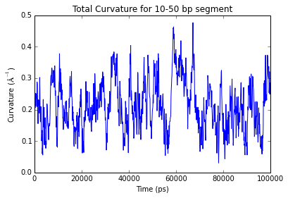

Analysis of Helical Axis¶
- This tutorial discuss the analyses that can be performed using the Phython APIs included in the do_x3dna package. The tutorial is prepared using ipython notebook and this notebook tutorial file could be downloaded from this link.
- Download the input files that are used in the tutorial from this link.
- HelAxis_odna.dat input file is required in this tutorial. This file is generated from do_x3dna using the trajectory, which contains the free DNA. The input file should be present in the current/present working directory.
- The Python APIs should be only used when do_x3dna is executed with -ref option.
- Additional Requirement: SciPy package
- Detailed documentation is provided here.
Importing Python Modules¶
- numpy: Required for the calculations involving large arrays
- matplotlib: Required to plot the results
- dnaMD:
Python script containing methods or functions to analyze DNA/RNA
structures from the MD trajectories
- The dnaMD.py script should be present in either present working directory or $PYTHONPATH environment variable.
import numpy as np
import matplotlib.pyplot as plt
import dnaMD
%matplotlib inline
Initializing DNA object and storing data to it¶
- DNA object is initialized by using the total number of base-pairs
- Local helical axis is formed by two adjacent base-pairs. Therefore, total number of Helical-axis postion is less than one of total number of base-pairs.
- X, Y and Z positions (Helical X-axis, Helical Y-axis and Helical Z-axis) of the Helical axis can be read and stored in DNA object from the input file using function set_helical_axis(...).
- The postions of local helical axis are stored in the DNA object (dnaMD.DNA.base_steps[i].hel_Xaxis, dnaMD.DNA.base_steps[i].hel_Yaxis and dnaMD.DNA.base_steps[i].hel_Zaxis), where i is index for base-steps.
## Initialization
fdna = dnaMD.DNA(60) #Initialization for 60 base-pairs free DNA
## Loading data from input files in respective DNA object
# Number of local helical axis positions = Number of base-pairs - one
# Number of helcial steps in a 60 base-pairs DNA = 59
fdna.set_helical_axis('HelAxis_odna.dat')
Reading file : HelAxis_odna.dat
Reading frame 1000
Finishid reading.... Total number of frame read = 1001
Smoothening of Helical Axis¶
- The helical axis postions calculated from do_x3dna are localized and do not form a smooth global axis upon joining these positions.
- The helical axis could be smoothed by spline interpolation using method generate_smooth_axis(...).
- A smooth three dimensional curve is fitted along the positions of local helical axis by spline interpolation method implemented in SciPy package.
- The calculated postions of helical axis are stored in the DNA object (dnaMD.DNA.base_steps[i].hel_Xaxis_smth, dnaMD.DNA.base_steps[i].hel_Yaxis_smth and dnaMD.DNA.base_steps[i].hel_Zaxis_smth), where i is index for base-steps.
- This procedure might take long time on large trajectory due to the fitting procedure.
Warning: Lower value of smooth may lead to an artifact of local sharp kink in the smoothed axis. Higher value of smooth may lead to the calculation of wrong helical axis.
### Smoothening of helical axis
fdna.generate_smooth_axis(smooth=500, spline=3, fill_point=6)
Fitting spline curve on helcial axis of frame 1000 out of 1001 frames
Finished spline curve fitting...
Extraction of original and smoothed helical axis postions as a function of time (manually)¶
- Psotions of original and smoothed helical axis for the given base-steps range can be extracted from the DNA obejct using function dnaMD.DNA.get_parameters(...).
- Following example shows, how to extract the data.
### Extraction of original helical axis for 5-55 base-steps segment
# X-axis original
RawX, bp_idx = fdna.get_parameters('Helical X-axis', [5, 55], bp_range=True)
# Y-axis original
RawY, bp_idx = fdna.get_parameters('Helical Y-axis', [5, 55], bp_range=True)
# Z-axis original
RawZ, bp_idx = fdna.get_parameters('Helical Z-axis', [5, 55], bp_range=True)
# X-axis smoothed
SmoothX, bp_idx = fdna.get_parameters('Helical X-axis smooth', [5, 55], bp_range=True)
# Y-axis smoothed
SmoothY, bp_idx = fdna.get_parameters('Helical Y-axis smooth', [5, 55], bp_range=True)
# Z-axis smoothed
SmoothZ, bp_idx = fdna.get_parameters('Helical Z-axis smooth', [5, 55], bp_range=True)
# Here RawX is a 2D array of shape (base-step, nframes)
# Some examples
## x, y, z coordinates of nth base-step in mth frame: base-step index = (n - 5), frame index = (m - 1)
print "\n====== Some Examples ======"
print ("Original coordinates of 8th base-step in 15th frame : [ %8.3f %8.3f %8.3f ]" %
(RawX[3][14], RawY[3][14], RawZ[3][14]))
print ("Smoothened coordinates of 8th base-step in 15th frame: [ %8.3f %8.3f %8.3f ]" %
(SmoothX[3][14], SmoothY[3][14], SmoothZ[3][14]))
print ("\nOriginal coordinates of 40th base-step in 900th frame : [ %8.3f %8.3f %8.3f ]" %
(RawX[37][899], RawY[37][899], RawZ[37][899]))
print ("Smoothened coordinates of 40th base-step in 900th frame: [ %8.3f %8.3f %8.3f ]\n" %
(SmoothX[37][899], SmoothY[37][899], SmoothZ[37][899]))
====== Some Examples ======
Original coordinates of 8th base-step in 15th frame : [ 101.280 173.630 84.670 ]
Smoothened coordinates of 8th base-step in 15th frame: [ 106.443 172.187 85.432 ]
Original coordinates of 40th base-step in 900th frame : [ 208.140 171.130 79.730 ]
Smoothened coordinates of 40th base-step in 900th frame: [ 205.639 172.066 80.286 ]
To calculate curvature and tangent vectors along helical axis¶
- The bending at a specifc position on the helical axis can be quantifed by its curvature.
- Approximate bending of a DNA segment could be also quantified by the angle between the tangent vectors of the segment’s end points
- Both curvature and tangent vectors could be calculated using dnaMD.DNA.calculate_curvature_tangent(...) function.
- Curvature and tangent vectors should be calculated after generating the smooth helical axis.
### Calculating curvature and tangent vectors
# If store_tangent=True; then tangent vectors will be stored for later use, otherwise it will be discarded
fdna.calculate_curvature_tangent(store_tangent=True)
fdna.calculate_angle_bw_tangents([5,50])
# Curvature vs Time for 22nd bp
plt.title('Curvature for 22nd bp')
time, value = fdna.time_vs_parameter('Helical axis curvature', [22])
plt.plot(time, value)
plt.xlabel('Time (ps)')
plt.ylabel('Curvature ($\AA^{-1}$)')
plt.show()
# Total Curvature vs Time for 10-50 bp segment
plt.title('Total Curvature for 10-50 bp segment')
# Bound DNA
# Here, Total Curvature is considered as the sum over the local curvatures of the base-steps
time, value = fdna.time_vs_parameter('Helical axis curvature', [10, 50], merge=True, merge_method='sum')
plt.plot(time, value)
plt.xlabel('Time (ps)')
plt.ylabel('Curvature ($\AA^{-1}$)')
plt.show()
 

Writing trajectory of Helical Axis¶
- Calculated helical axis from do_x3dna and smoothed helical axis could be written as trajectory in PDB format file using dnaMD.DNA.write_haxis_pdb(...)
- If write_smooth_axis=True: Coordinates of smoothed helical axis will be written
- If write_orig_axis=True: Coordinates of original helical axis will be written
- If write_curv=True: The calculated curvature of smooth helical axis will be written in B-factor field of PDB file. This might be helpful to visualize the helical axis according to its bending in color scale.
- The values of curvature might be very small ( < 0.01 ). Therefore, scaling up of curvature by 100 to 1000 times may help in better visualization on color scale.
# Only smoothed helical axis
fdna.write_haxis_pdb(filename='only_smoothed_axis.pdb', write_smooth_axis=True)
# Only original helical axis
fdna.write_haxis_pdb(filename='only_original_axis.pdb', write_smooth_axis=False, write_orig_axis=True)
# Both original and smoothed axis
fdna.write_haxis_pdb(filename='original_smoothed_axis.pdb', write_smooth_axis=True, write_orig_axis=True)
# Both original and smoothed axis with curvature scaled-up by 1000 times
fdna.write_haxis_pdb(filename='original_smoothed_axis_curvature_.pdb', write_smooth_axis=True, write_orig_axis=True,
write_curv=True, scale_curv=1000)
Angle between tangent vectors¶
- Approximate bending of a DNA segment could be also quantified by the angle between the tangent vectors of the segment’s end points
- Angle between the tangent vectors can be calculated using dnaMD.DNA.calculate_angle_bw_tangents(...)
# Angle vs Time for 28-32 bp
plt.title('Bending Angle for 28-32 bp')
# Calculating angle between the tangent vectors of 38th and 32nd base-steps
angle = fdna.calculate_angle_bw_tangents([28,32])
# Change to Degree
angle = np.degrees(angle)
# Plotting
plt.plot(fdna.time, angle)
plt.xlabel('Time (ps)')
plt.ylabel('Angle ( $^o$)')
plt.show()
# Angle vs Time for 25-35 bp
plt.title('Bending Angle for 25-35 bp')
# Calculating angle between the tangent vectors of 25th and 35th base-steps
angle = fdna.calculate_angle_bw_tangents([25,35])
# Change to Degree
angle = np.degrees(angle)
# Plotting
plt.plot(fdna.time, angle)
plt.xlabel('Time (ps)')
plt.ylabel('Angle ( $^o$)')
plt.show()
# Angle vs Time for 20-40 bp
plt.title('Bending Angle for 20-40 bp')
# Calculating angle between the tangent vectors of 20th and 40th base-steps
angle = fdna.calculate_angle_bw_tangents([20,40])
# Change to Degree
angle = np.degrees(angle)
# Plotting
plt.plot(fdna.time, angle)
plt.xlabel('Time (ps)')
plt.ylabel('Angle ( $^o$)')
plt.show()
# Angle vs Time for 15-45 bp
plt.title('Bending Angle for 15-45 bp')
# Calculating angle between the tangent vectors of 15th and 45th base-steps
angle = fdna.calculate_angle_bw_tangents([15,45])
# Change to Degree
angle = np.degrees(angle)
# Plotting
plt.plot(fdna.time, angle)
plt.xlabel('Time (ps)')
plt.ylabel('Angle ( $^o$)')
plt.show()
# Angle vs Time for 5-55 bp
plt.title('Bending Angle for 5-55 bp')
# Calculating angle between the tangent vectors of 5th and 55th base-steps
angle = fdna.calculate_angle_bw_tangents([5,55])
# Change to Degree
angle = np.degrees(angle)
# Plotting
plt.plot(fdna.time, angle)
plt.xlabel('Time (ps)')
plt.ylabel('Angle ( $^o$)')
plt.show()